물류관리사-2교시 (2011-08-14 기출문제)
1과목: 보관하역론
1. 파렛트화 또는 컨테이너화를 효과적으로 실시하기 위해서는 파렛트와 컨테이너의 규격, 구조 및 품질 등이 유기적으로 연결되도록 할 필요가 있다. 이러한 원칙을 무엇이라 하는가?
- 탄력성의 원칙
- 표준화의 원칙
- 사양변경의 원칙
- 재질변경의 원칙
- 시스템화의 원칙
(정답률: 알수없음)

2. 각 품목의 입출고 비용은 입출고 횟수에만 비례하고, 1회당 입출고량과는 상관없다. 창고의 입구와 출구는 동일한 곳에 위치하며, 품목별로 보관 위치를 지정하여(dedicated) 사용한다. 단위시간당 전체 입출고에 필요한 총 이동거리를 최소화하기 위해 입ㆍ출구에서 가장 가까운 위치에 배치하여야 할 품목은?
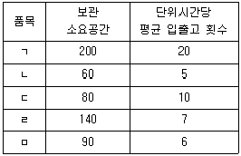
- 품목 ㄱ
- 품목 ㄴ
- 품목 ㄷ
- 품목 ㄹ
- 품목 ㅁ
(정답률: 알수없음)
3. 재고에 관한 설명으로 옳지 않은 것은?
- 수요의 불확실성에 대비한다.
- 수요와 공급의 균형을 위해 사용한다.
- 영업과 마케팅 전략에 유연성을 제공한다.
- 수요의 불확실성에 대비한 재고를 진부화 재고라 한다.
- 생산과 유통 및 유통채널간의 완충 역할을 한다.
(정답률: 알수없음)
4. 창고 내에서 저온제품의 보관운영 시 상온제품과 차별화하여 고려해야 할 특성과 가장 거리가 먼 것은?
- 창고 내의 적정온도 유지
- 제품 입고 시 바코드 관리
- 창고 내 온도 모니터링 장치
- 입출고량을 고려한 전실의 적정크기
- 출고 시 유통기한 관리 및 콜드체인 관리
(정답률: 알수없음)
5. 물류창고의 유형에 관한 설명으로 옳은 것은?
- 자동화창고: 정보시스템과 창고의 시설 및 장비가 온라인으로 일체화되어 운영되는 창고
- 공공창고: 임대창고 또는 영업용 창고와 대비되는 창고로서 자기의 물품을 보관하기 위한 창고
- 위험물창고: 공조기 또는 냉난방 시설로 온도와 습도를 일정하게 조정하는 창고
- 저장창고: 노천에 설치하는 옥외창고로서 담장, 철책 등을 설치하여 운영하는 창고
- 리스창고: 관세법에 근거를 두고 세관장의 허가를 얻어 수출입 화물을 취급하는 창고
(정답률: 알수없음)
6. 자동화창고에서 물품을 보관하는 위치를 결정하는 보관(Storage)방식에 관한 설명으로 옳은 것은?
- 근거리 우선 보관(Closest Open Location Storage)방식은 지정위치보관방식의 대표적 유형이다.
- 급별보관(Class-based Storage)방식은 일반적으로 물품관리의 용이성을 고려하여 보관위치를 결정한다.
- 지정위치보관(Dedicated Storage)방식은 일반적으로 품목별 보관소요 공간과 단위시간당 평균 입출고 횟수를 고려하여 보관위치를 결정한다.
- 임의위치보관(Randomized Storage)방식은 일반적으로 물품의 입출고 빈도를 고려하여 보관위치를 결정한다.
- 전체 보관소요 공간을 가장 많이 차지하는 보관 방식은 임의위치보관(Randomized Storage)방식이다.
(정답률: 알수없음)
7. 다음 설명 중 하역장비의 명칭으로 올바르게 짝지어진 것은?
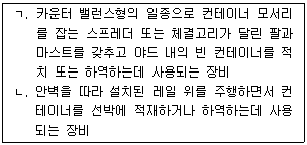
- ㄱ: 스트래들 캐리어(Straddle Carrier), ㄴ: 트랜스퍼 크레인(Transfer Crane)
- ㄱ: 스트래들 캐리어(Straddle Carrier), ㄴ: 컨테이너 크레인(Container Crane)
- ㄱ: 오더 피킹 트럭(Order Picking Truck), ㄴ: 트랜스퍼 크레인(Transfer Crane)
- ㄱ: 탑 핸들러 (Top Handler), ㄴ: 컨테이너 크레인(Container Crane)
- ㄱ: 탑 핸들러(Top Handler), ㄴ: 트랜스퍼 크레인(Transfer Crane)
(정답률: 알수없음)
8. T11형 파렛트(Pallet)에 200mm×300mm 크기의 제품 6개를 평면으로 적재하였을 경우, 파렛트의 바닥면적 적재율은 약 얼마인가?
- 20%
- 30%
- 40%
- 50%
- 60%
(정답률: 알수없음)
9. 동일한 제품을 토탈피킹(Total Picking)한 후 거래처별로 분배하는 형태의 시스템은?
- DAS(Digital Assort System)
- DPS(Digital Picking System)
- WMS(Warehouse Management System)
- ERP(Enterprise Resource Planning)
- R/F(Radio Frequency)
(정답률: 알수없음)
10. 다음과 같은 작업 조건하에서 물류센터가 필요로 하는 포크리프트 대수는?
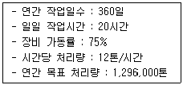
- 10대
- 15대
- 20대
- 25대
- 30대
(정답률: 알수없음)
11. 분류시스템(Sorting System)의 명칭에 관한 설명으로 옳지 않은 것은?
- 팝업(Pop-up) 소팅 컨베이어 : 컨베이어 반송면의 아래방향에서 벨트, 롤러, 휠, 핀 등의 분기장치가 튀어나와 단위화물을 내보내는 컨베이어
- 틸팅(Tilting) 소팅 컨베이어 : 레일을 주행하는 트레이, 슬라이드의 일부 등을 경사지게 하여 단위화물을 활강시키는 컨베이어
- 다이버터(Diverter) 소팅 컨베이어 : 외부에 설치된 암(Arm)을 회전시켜 반송 경로상에 가이드벽을 만들어 단위화물을 이동시키는 컨베이어
- 크로스벨트(Cross Belt) 소팅 컨베이어 : 레일을 주행하는 연속된 캐리어상의 소형벨트 컨베이어를 레일과 교차하는 방향에 구동시켜 단위화물을 내보내는 컨베이어
- 슬라이딩 슈(Sliding Shoe) 소팅 컨베이어 : 레일을 주행하는 트레이 등의 바닥면을 개방하여 단위 화물을 방출하는 컨베이어
(정답률: 알수없음)
12. 다음 그림은 어떤 물류 설비인가?
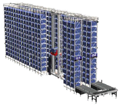
- AS/RS
- Carousel
- Mezzanine Rack
- Mobile Rack
- Gravity Flow Rack
(정답률: 알수없음)
13. 파렛타이저(Palletizer)에 관한 설명으로 옳지 않은 것은?
- 파렛타이저의 표준화 대상으로는 용어 및 기호, 안전장치, 호환성, 조작방법 등이 있다.
- 기계 파렛타이저는 캐리지, 클램프 또는 푸셔 등의 적재장치를 사용하여 파렛트에 물품을 자동적으로 적재하는 파렛타이저이다.
- 고상식 파렛타이저는 높은 위치에 적재장치를 구비하고 일정한 적재위치에서 파렛트를 내리면서 물품을 적재하는 파렛타이저이다.
- 저상식 파렛타이저는 파렛트를 낮은 장소에 놓고 적재장치를 오르내리면서 물품을 적재하는 파렛타이저이다.
- 로봇식 파렛타이저는 산업용 로봇에 머니퓰레이터(Manipulator)를 장착하여 물품을 적재하는 방식의 파렛타이저로 저속 및 고속처리가 가능하지만 파렛트 패턴 변경이 어려운 단점이 있다.
(정답률: 알수없음)
14. 소품종 다량이면서 계절적 수요변동이 큰 화물의 보관에 적합한 랙은?
- 드라이브 인 랙(Drive-in Rack)
- 파렛트 랙(Pallet Rack)
- 흐름랙(Flow Rack)
- 하이스택 랙(High Stack Rack)
- 암 랙(Arm Rack)
(정답률: 알수없음)
15. 다음 내용에 맞는 오더피킹 방법은?
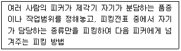
- 릴레이방법
- 총량피킹방법
- 1인 1건 방법
- 파종방법
- 어소트 방법
(정답률: 알수없음)
16. 물류 모듈화에 관한 설명으로 옳지 않은 것은?
- 유닛로드시스템은 파렛트를 기본으로 하는 것이 일반적이다.
- 우리나라에서는 일관수송용 평파렛트에 관한 KS 규격이 제정되어 있으며, 치수는 1,100mm×1,100mm로 규정하고 있다.
- 유닛로드 치수를 표준화하는 데는 수송에 관계있는 트럭이나 컨테이너화차와의 정합성이 필요하다.
- 파렛트 규격은 동업종 및 이업종간에도 호환성이 있어야 한다.
- 파렛트 치수는 각 사업장별로 독자적으로 사용하여 적재효율을 향상시켜야 한다.
(정답률: 알수없음)
17. 창고의 기능에 관한 설명으로 옳지 않은 것은?
- 생산과 소비의 거리 조정을 통해 거리적 효용을 창출한다.
- 생산과 소비의 시간적 간격을 조정하여 수급조정기능을 수행한다.
- 물품의 수급을 조정하여 가격안정을 도모하는 기능을 수행한다.
- 물건을 보관하여 재고를 확보함으로써 품절을 방지하고 신용을 증대시키는 기능을 수행한다.
- 직접 물품을 판매하거나 판매를 위한 기지로서의 기능을 수행하기도 한다.
(정답률: 알수없음)
18. 자동화창고(Automated Warehouse)의 특성에 관한 설명으로 옳지 않은 것은?
- 재고관리 및 선입선출에 의한 입출고관리가 용이하다.
- Free Location 보관방식 적용은 보관능력 및 시스템의 유연성면에서 효율성이 낮다.
- 생산라인과의 동기성, 적정재고, 작업준비를 위한 부품 공급기능을 갖는다.
- 보관보다는 물품의 흐름(Flow)에 중점을 두고 설계해야 한다.
- 다품종 소량주문에 대응이 용이하다.
(정답률: 알수없음)
19. 다음 그림은 어떤 화물의 화인이다. 이 화인을 보면서 판단할 수 있는 내용으로 옳지 않은 것은?
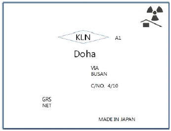
- 화물은 일본에서 생산된 제품이다.
- 부산을 거쳐서 도하(Doha)로 운송되는 화물이다.
- 상기 화인이 부착되어 있는 화물은 모두 10개 이며, 그 중에서 4번째에 해당하는 화물이다.
- 화물은 방사능을 포함하고 있으므로 취급시 주의해야 한다.
- 전체 중량이 얼마인지를 알 수 없는 화물이다.
(정답률: 알수없음)
20. 창고관리시스템(WMS)에 관한 설명으로 옳지 않은 것은?
- WMS의 주문관련 기능은 입고관리, 보관관리, 재고관리, 선입선출관리 등이다.
- 물류단지의 대형화, 중앙집중화, 부가가치기능 강화의 추세에 따라 WMS가 유통중심형 물류단지를 위한 차별화 전략의 핵심요인으로 등장했다.
- WMS를 활용하면 재고정확도, 공간과 설비의 활용도가 높아진다.
- WMS의 출고관련 기능은 수ㆍ배송관리, 배차스케줄 운영 등이다.
- WMS를 활용하면 창고에 관한 업무 프로세스를 전산화ㆍ정보화하여 일반적으로 적은 인원으로 쉽고 편리하게 업무를 수행할 수 있다.
(정답률: 알수없음)
21. 아래 자동창고시스템의 조건에 의한 자동창고의 평균 가동률은? (단, 소수점 둘째자리에서 반올림하시오.)
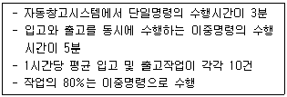
- 52.1%
- 65.2%
- 73.5%
- 86.7%
- 91.4%
(정답률: 알수없음)
22. 포장과 관련된 설명으로 옳지 않은 것은?
- 공업포장은 최소의 경비로 그 기능을 만족시키는 것을 목적으로 한다.
- 상업포장은 상품의 파손을 방지하고 물류비를 절감할 수 있는 적정포장을 하는 것이다.
- 공업포장의 제1의 목적은 보호기능이며, 상업포장의 제1의 목적은 판매촉진기능이다.
- 상업포장에서 판매를 촉진시킬 수 있다면 포장비용의 상승도 무방하다.
- 공업포장은 물품의 보호기능과 취급의 편리성을 추구한다.
(정답률: 알수없음)
23. A공장의 수요처가 다음과 같이 주어질 때, 무게 중심법을 이용한 최적의 물류센터입지 좌표는? (단, 지역별 월평균 물동량은 지역1이 35톤, 지역2가 20톤, 지역3이 15톤이며, 소수점 첫째자리에서 반올림하시오.)
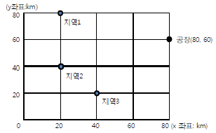
- (33, 38)
- (44, 45)
- (48, 55)
- (52, 58)
- (58, 52)
(정답률: 알수없음)
24. 다음 중 영업창고의 장점을 모두 고른 것은?
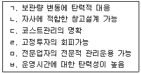
- ㄱ, ㄷ, ㅁ
- ㄱ, ㄷ, ㄹ, ㅁ
- ㄴ, ㄹ, ㅂ
- ㄴ, ㄷ, ㅁ, ㅂ
- ㄷ, ㄹ, ㅁ, ㅂ
(정답률: 알수없음)
25. MRP시스템과 JIT시스템을 비교하여 설명한 것 중 옳지 않은 것은?
- MRP시스템은 Push방식이며, JIT시스템은 Pull방식이다.
- MRP시스템은 자재의 소요 및 조달계획을 수립하여 그 계획에 의한 실행에 중점을 두며, JIT시스템은 불필요한 부품, 재공품, 자재의 재고를 없애도록 설계된 시스템이다.
- MRP시스템은 칸반(Kanban)에 의해 자재의 제조명령, 구매주문을 가시적으로 통제하며, JIT시스템은 컴퓨터에 의한 정교한 정보처리를 한다.
- MRP시스템은 품질수준에 약간의 불량을 허용하나, JIT시스템은 무결점 품질을 유지한다.
- MRP시스템은 종속 수요품목의 자재 수급계획에 더 적합하다.
(정답률: 알수없음)
26. 테이블을 생산하기 위해 상판과 다리를 주문한 MRP계획표의 일부분이다. 다음 표에 관한 설명으로 옳지 않은 것은?
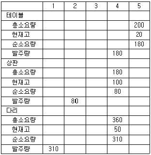
- 테이블의 주문량은 모두 200개 이다.
- 상기 MRP는 테이블 생산시 불량품 발생을 고려 하지 않았다.
- 상판에 대한 리드타임은 2주, 다리에 대한 리드타임은 3주이다.
- 테이블 한 개를 생산하기 위해 다리가 4개 필요하다.
- 상기 MRP를 작성한 업체가 직접 테이블을 생산하는 업체라면 생산하는 데 소요되는 기간은 1주이다.
(정답률: 알수없음)
27. 일일 수요가 정규분포를 따르며 평균이 5, 표준편차가 3, 리드타임이 2일인 제품이 있다. 수요가 불확실한 상태에서 서비스 수준이 95%(표준정규분포값은 1.645) 일 때, 안전재고량은? (단, √2 = 1.414, √3 = 1.732, √4 = 2, √5 = 2.236 이며, 소수점 첫째자리에서 반올림하시오.)
- 5
- 7
- 9
- 12
- 15
(정답률: 알수없음)
28. 자원분배계획(DRP: Distribution Resource Planning)에 관한 설명으로 옳지 않은 것은?
- 고객의 수요정보를 예측하여 제품의 재고수준을 낮추는 효과를 가져온다.
- 주요 산출물은 물류망의 최적 단계수를 결정한다.
- 정시 배송을 늘리고 고객의 불만을 감소시켜 고객서비스 향상에 기여한다.
- 생산완료된 제품을 수요처에 효율적으로 공급하기 위한 시스템이다.
- 생산시스템에 원자재나 부품을 효율적으로 공급하여 조달 및 생산물류를 효율적으로 계획, 통제한다.
(정답률: 알수없음)
29. 효율적인 재고관리와 물류운영 최적화를 위해 가장 우선적으로 고려되어야 할 사항은?
- 보관시설의 설계
- 제품의 품질
- 운반경로의 예측
- 정확한 수요의 예측
- 적정 서비스
(정답률: 알수없음)
30. A제품의 연간 평균재고량은 2,000개, 개당 구매가격은 1,000원이다. 연간 단위당 재고 유지비가 구매가격의 4%인 경우, 연간 재고 유지비용은? (단, 재고 보충은 없으며 수요는 일정하다.)
- 40,000원
- 60,000원
- 80,000원
- 100,000원
- 120,000원
(정답률: 알수없음)
31. 소비자, 도소매점, 물류창고, 제조업체로 부터의 수요정보가 시간이 지나면서 더욱 왜곡되는 이른바 채찍 효과(Bullwhip Effect)에 관한 대처방안으로 옳지 않은 것은?
- 정보를 공유하고 공급망(Supply Chain)상에서 재고를 관리할 수 있는 전략적 파트너십을 구축한다.
- 공급망 전반에 걸쳐 있는 수요정보를 공유함으로서 안전재고를 줄인다.
- 제조업체 판매실적 평가는 소매상이 제품을 소비자에게 판매한 POS(Point on Sales) 판매정보 보다 소매상에게 판매한 실적을 활용한다.
- 소비자 수요절차상의 고유한 변동폭을 감소시키거나 안정적인 가격구조 등으로 소비자 수요의 변동폭을 조정한다.
- 고객, 공급자와 정보의 실시간 공유를 위한 정보 기술전략을 수립하고 운용한다.
(정답률: 알수없음)
32. 아래와 같은 조건 일 때, 재발주점은 얼마인가? (단, √2 = 1.414, √3 = 1.732, √4 = 2, √5 = 2.236 이며, 소수점 첫째자리에서 반올림 하시오.)
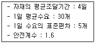
- 75
- 96
- 120
- 136
- 154
(정답률: 알수없음)
33. 재고 보충을 위한 경제적 주문량(EOQ)모형에서 일정기간 동안 총수요량이 40% 증가하고 단위재고유지비용이 30% 감소하였다면, 증감하기 전과 비교하여 EOQ는 얼마나 변동되는가? (단, √2 = 1.414, √3 = 1.732, √4 = 2, √5 = 2.236 이며, 소수점 첫째자리에서 반올림 하시오.)
- 41% 증가
- 33% 증가
- 23% 증가
- 23% 감소
- 14% 감소
(정답률: 알수없음)
34. 아래와 같은 조건 일 때, 필요한 트럭 도크(Dock)의 수는?
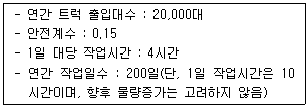
- 44개
- 46개
- 48개
- 50개
- 52개
(정답률: 알수없음)
35. 배송센터의 입지선정기법에 관한 설명 중 옳은 것은?
- '톤ㆍ킬로법'은 공급지 및 수요지가 고정되어 있고, 각 공급지로부터 단일 배송센터로 반입되는 물량과 배송센터로부터 각 수요지로 반출되는 물동량이 정해져 있을 때 활용하는 기법이다.
- '무게중심법'은 각 수요지에서 배송센터까지의 거리와 각 수요지까지의 운송량에 대해 평가하고 총계가 최소가 되는 입지를 선정하는 기법이다.
- '브라운깁스법'은 물류센터 유지관리비용을 산출하고 총비용이 최소가 되는 대안을 선정하는 기법이다.
- '총비용비교법'은 입지에 영향을 주는 인자들을 필수적 요인, 객관적 요인, 주관적 요인등을 고려하여 다수의 입지를 결정하는 기법이다.
- '체크리스트법'은 입지에 관련된 양적 요인과 질적 요인을 동시에 고려하여 중요도에 따라 가장 평가점수가 높은 입지를 선정하는 기법이다.
(정답률: 알수없음)
36. 아래와 같은 조건 일 때, 제품 A의 보관공간으로 몇 상자 분의 면적을 할당하여야 하는가?
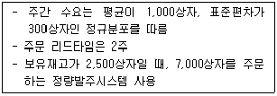
- 7,300상자
- 7,500상자
- 7,700상자
- 7,900상자
- 8,100상자
(정답률: 알수없음)
37. 제품 A는 주당 500박스에서 1,000박스 사이로 수요가 발생하며, 회사는 박스당 20,000원에 공급받아 40,000원에 판매한다. 이때의 서비스 수준 및 최적재고수준은? (단, 판매되지 않은 제품의 잔존가치는 없으며, 무상 폐기처분됨)
- 서비스수준: 30%, 최적재고수준: 160개
- 서비스수준: 33%, 최적재고수준: 665개
- 서비스수준: 50%, 최적재고수준: 750개
- 서비스수준: 67%, 최적재고수준: 335개
- 서비스수준: 77%, 최적재고수준: 835개
(정답률: 알수없음)
38. 하역합리화 원칙에 관한 설명으로 옳지 않은 것은?
- 하역기계화의 원칙: 인력작업을 기계화하여 하역 작업의 효율성과 경제성을 증가시킨다.
- 유닛로드의 원칙: 화물을 어느 일정 단위로 단위화하는 것을 의미한다.
- 하역활성화의 원칙: 운반 활성지수를 최소화하는 원칙으로, 지표와 접점이 작을수록 활성지수는 낮아지며 하역작업의 효율이 증가한다.
- 인터페이스의 원칙: 하역작업의 공정간 접점을 원활히 소통하도록 하는 것이다.
- 하역경제성의 원칙: 운반속도의 원칙, 최소취급의 원칙, 수평직선의 원칙 등을 포함하는 원칙이다.
(정답률: 알수없음)
39. 운반관리(Material Handling)의 4요소에 관한 설명으로 옳지 않은 것은?
- Motion: 재료, 부품, 제품을 필요로 하는 분야로 보다 경제적이고 합리적으로 운반한다.
- Time: 제조공정이나 기타 필요한 장소에 필요한 것을 적시에 공급한다.
- Quantity: 필요량의 변화에 대응하여 정확한 수량, 중량, 용량을 공급한다.
- Quality: 제조공정에 필요한 고품질의 물품을 운반한다.
- Space: 공간, 장소를 계통적이고 효율적으로 이용한다.
(정답률: 알수없음)
40. 일본의 덴소웨이브사에서 개발한 2차원(매트릭스)형태의 코드로, 많은 정보를 저장할 수 있으며, 일반 바코드 보다 인식속도와 인식률, 복원력이 뛰어나다. 기업의 중요한 홍보 및 마케팅 수단으로 활용되면서 온ㆍ오프라인에 걸쳐 폭 넓게 활용되고 있는 코드는?
- UPC Code
- EAN Code
- KAN Code
- RFID Code
- QR Code
(정답률: 알수없음)
2과목: 물류관련법규
41. 물류정책기본법령상 국제물류주선업의 등록의 결격사유가 아닌 것은?
- 국제물류주선업의 등록 취소처분을 받은 후 2년이 지나지 아니한 자
- 외국인
- 물류정책기본법을 위반하여 금고 이상의 형의 선고를 받고 그 집행이 종료(집행이 종료된 것으로 보는 경우를 포함한다)되거나 집행이 면제된 날부터 2년이 지나지 아니한 자
- 화물자동차 운수사업법을 위반하여 금고 이상의 형의 집행유예를 선고받고 그 유예기간 중에 있는 자
- 항공법 또는 해운법을 위반하여 벌금형을 선고받고 2년이 지나지 아니한 자
(정답률: 알수없음)
42. 물류정책기본법령상 물류서비스업으로 분류되지 않는 사업은?
- 화물운송의 주선
- 물류장비의 임대
- 물류정보의 처리
- 물류컨설팅
- 물류시설의 운영
(정답률: 알수없음)
43. 물류정책기본법령상 국가, 지방자치단체, 대통령령으로 정하는 물류 관련 기관 및 물류기업 등이 새로운 물류시설을 건설하거나 기존 물류시설을 정비할 때 고려하여야 하는 사항이 아닌 것은?
- 주요 물류거점시설 및 운송수단과의 연계성
- 주변 물류시설과의 기능중복 여부
- 항공법 제2조 제7호에 따른 공항 중 화물의 운송을 위한 시설을 갖춘 공항의 경우 적정한 규모 및 기능을 가진 배후 물류시설 부지의 확보 여부
- 철도산업발전기본법 제3조 제2호의 규정에 의한 철도시설의 경우 적정한 규모 및 기능을 가진 배후 물류시설 부지의 확보 여부
- 항만법 제2조 제1호에 따른 항만 중 화물의 운송을 위한 시설을 갖춘 항만의 경우 적정한 규모 및 기능을 가진 배후 물류시설 부지의 확보 여부
(정답률: 알수없음)
44. 물류정책기본법령상 외국인투자기업 및 환적 화물을 유치하기 위한 공동투자유치 활동 등에 해당하지 않는 것은?
- 물류시설관리자 또는 국제물류 관련 기관ㆍ단체와 공동으로 투자유치 활동 수행
- 재외공관 등 관계 행정기관 및 대한무역투자 진흥공사법에 따른 대한무역투자진흥공사 등 관련 기관ㆍ단체에 대한 협조 요청
- 평가대상기관에 대하여 평가결과에 관계없이 동일한 행정적ㆍ재정적 지원
- 항공법 제2조 제7호에 따른 공항 중 국제공항 및 그 배후지에 위치한 물류시설에 대한 소유권 또는 관리ㆍ운영권을 인정받은 자에 대한 투자유치활동 평가
- 항만법 제2조 제2호에 따른 무역항 및 그 배후지에 위치한 물류시설에 대한 소유권 또는 관리ㆍ운영권을 인정받은 자에 대한 투자유치 활동 평가
(정답률: 알수없음)
45. 물류정책기본법령상 물류현황조사 등에 관한 설명으로 옳지 않은 것은?
- 시ㆍ도지사는 지역물류현황조사를 함에 있어 국가통합교통체계효율화법에 따른 국가교통조사와 중복되지 아니하도록 하여야 한다.
- 국토해양부장관은 물류에 관한 정책 또는 계획의 수립ㆍ변경을 위하여 필요하다고 판단될 때에는 물류관련단체와 미리 협의한 후 물류현황 등에 관하여 조사하여야 한다.
- 국토해양부장관은 물류현황조사를 효율적으로 수행하기 위하여 필요한 경우에는 물류현황조사의 전부 또는 일부를 전문기관으로 하여금 수행하게 할 수 있다.
- 국토해양부장관은 물류현황조사지침을 작성하려는 경우에는 미리 관계중앙행정기관의 장과 협의하여야 한다.
- 국토해양부장관은 물류현황조사의 결과에 따라 물류비 등 물류지표를 설정하여 물류정책의 수립 및 평가에 활용할 수 있다.
(정답률: 알수없음)
46. 물류정책기본법령상 종합물류기업 인증에 관한 설명으로 옳지 않은 것은?
- 물류사업을 종합적ㆍ복합적으로 영위하는 자는 자신이 영위하는 물류사업을 관장하는 중앙행정기관의 장으로부터 종합물류기업으로 인증을 받을 수 있다.
- 국토해양부장관은 종합물류기업의 인증과 관련하여 종합물류기업 인증센터를 지정하여 인증신청의 접수 등의 업무를 하게 할 수 있다.
- 주무부장관은 인증종합물류기업에 인증서를 교부하고, 인증을 나타내는 표시를 제정하여 인증종합물류기업이 사용하게 할 수 있다.
- 인증센터는 공공기관과 정부출연연구기관 중에서 지정하여야 한다.
- 국토해양부장관은 인증센터를 지정한 때에는 그 사실을 관보에 공고하여야 한다.
(정답률: 알수없음)
47. 물류정책기본법령상 국가물류통합데이터베이스 운영자의 업무 수행 범위에 속하지 않는 것은?
- 국가교통데이터베이스의 구축ㆍ운영업무
- 물류정보의 조사ㆍ수집ㆍ가공 및 보관
- 이용자에 대한 물류정보의 제공
- 물류정보의 보급 및 이용 촉진
- 국가물류통합데이터베이스의 기초조사ㆍ설계 및 구성
(정답률: 알수없음)
48. 물류정책기본법령상 과징금의 부과 및 납부 등에 관한 설명으로 옳은 것은?
- 국토해양부장관은 과징금 납부의 독촉을 받은 자가 납부기한까지 과징금을 내지 아니한 경우에는 소속 공무원으로 하여금 국세 체납처분의 예에 따라 과징금을 강제징수하게 할 수있다.
- 천재지변이나 그 밖의 부득이한 사유로 인하여 그 납부기간 안에 과징금을 낼 수 없는 경우에는 그 사유가 없어진 날부터 10일 이내에 내야 한다.
- 과징금의 납부통지를 받은 자가 납부기한까지 과징금을 내지 아니한 경우에는 납부기한이 지난 날부터 14일 이내에 독촉장을 발부하여야 한다.
- 국토해양부장관은 국제물류주선업자의 사업규모, 사업지역의 특수성, 위반행위의 정도 및 횟수 등을 고려하여 과징금 금액의 3분의 1의 범위에서 이를 늘리거나 줄일 수 있다.
- 과징금의 수납기관은 과징금영수증을 교부한 때에는 기획재정부장관에게 영수필통지서를 송부하여야 한다.
(정답률: 알수없음)
49. 물류시설의 개발 및 운영에 관한 법령상 물류단지재정비사업에 관한 설명으로 옳지 않은 것은?
- 부분 재정비사업은 물류시설분과위원회 또는 지역물류정책위원회의 심의를 거치지 아니할 수 있다.
- 전부 재정비사업은 토지이용계획 및 주요 기반 시설계획의 변경을 수반하는 경우로서 지정된 물류단지 면적의 50/100 이상을 재정비하는 사업이다.
- 물류단지지정권자는 준공된 날부터 20년이 지나지 아니한 물류단지에 대하여도 업종의 재배치 등이 필요한 경우에는 물류단지재정비사업을 할 수 있다.
- 지원시설의 확충 계획은 재정비계획에 포함되어야 한다.
- 물류단지지정권자가 재정비시행계획을 승인하려면 입주업체 및 관계 지방자치단체의 장과 협의하여야 한다.
(정답률: 알수없음)
50. 물류시설의 개발 및 운영에 관한 법령상 다음 ( )에 들어갈 내용으로 올바르게 나열된 것은?
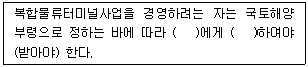
- 국토해양부장관, 등록
- 국토해양부장관, 인가
- 국토해양부장관, 허가
- 지식경제부장관, 허가
- 지식경제부장관, 인가
(정답률: 알수없음)
51. 물류시설의 개발 및 운영에 관한 법령상 시행자가 수의계약으로 할 수 없는 행위는?
- 학교용지ㆍ공공청사용지 등을 국가, 지방자치단체 및 해당 공공시설을 설치할 수 있는 자에게 공급
- 토지상환채권에 따른 토지의 상환
- 물류터미널을 건설하기 위한 부지 안의 국가 또는 지방자치단체의 소유재산을 물류터미널사업자에게 매각
- 고시한 물류단지개발실시계획에 따라 존치하는 시설물의 유지관리에 필요한 최소한의 토지의 공급
- 1 필지당 330제곱미터 초과 660제곱미터 이하의 범위에서 국토해양부장관이 정하여 고시하는 면적에 따른 토지의 공급
(정답률: 알수없음)
52. 물류시설의 개발 및 운영에 관한 법령상 복합 물류터미널사업과 관련한 과태료 부과 사항에 해당하는 것은?
- 복합물류터미널사업을 등록하지 아니하고 경영한 자
- 변경등록을 하지 아니하고 등록한 사항을 변경한 자
- 성명 또는 상호를 다른 사람에게 사용하게 하거나 등록증을 대여한 자
- 복합물류터미널 사업을 양수하여 사업승계의 신고를 하지 아니한 자
- 복합물류터미널 건설 공사시행인가 또는 변경 인가를 받지 아니하고 공사를 시행한 자
(정답률: 알수없음)
53. 물류시설의 개발 및 운영에 관한 법령상 국토해양부장관이 시ㆍ도지사의 의견을 듣고 관계중앙행정기관의 장과 협의한 후 물류시설분과위원회의 심의를 거쳐야 하는 사항이 아닌 것은?
- 물류시설개발종합계획의 수립
- 물류단지관리계획의 수립
- 물류단지의 지정
- 물류단지개발지침의 작성
- 물류단지관리지침의 작성
(정답률: 알수없음)
54. 물류시설의 개발 및 운영에 관한 법령상 복합물류터미널 사업자의 등록을 반드시 취소하여야 하는 때는?
- 변경등록을 하지 않고 등록사항을 변경한 때
- 등록기준에 맞지 아니하게 된 때
- 다른 사람에게 자기의 성명 또는 상호를 사용하여 사업을 하게 하거나 등록증을 대여한 때
- 정당한 사유 없이 신고한 휴업기간이 지난 후에도 사업을 재개하지 아니한 때
- 인가 또는 변경인가를 받지 아니하고 공사를 시행하거나 변경한 때
(정답률: 알수없음)
55. 물류시설의 개발 및 운영에 관한 법령상 물류단지개발실시계획 승인의 고시사항이 아닌 것은?
- 사업의 목적 및 개요
- 사업시행지역의 위치 및 면적
- 사업시행자의 성명(법인은 그 명칭과 대표자의 성명)
- 사업시행기간(착공 및 준공예정일 포함)
- 사업시행지역의 토지이용현황
(정답률: 알수없음)
56. 물류시설의 개발 및 운영에 관한 법령상 공공시설의 귀속에 관한 설명으로 옳지 않은 것은?
- 공공시설과 재산의 등기에 관하여는 물류단지개발사업의 실시계획승인서와 준공인가로써 등기원인을 증명하는 서면을 갈음할 수 있다.
- 물류단지개발사업의 시행으로 새로 설치된 공공시설은 그 시설을 관리할 국가 또는 지방자치단체에 무상으로 귀속된다.
- 물류단지지정권자는 공공시설의 귀속 및 양도에 관한 사항이 포함된 실시계획을 승인하려는 때에는 미리 그 공공시설을 관리하는 기관의 의견을 들어야 한다.
- 기존의 공공시설에 대체되는 공공시설을 설치한 경우에는 종래의 공공시설은 국가 또는 지방자치단체에게 무상으로 귀속된다.
- 시행자는 국가 또는 지방자치단체에 귀속될 공공시설과 시행자에게 귀속되거나 양도될 재산의 종류와 토지의 세부목록을 그 물류단지개발사업의 준공 전에 관리청에 통지하여야 한다.
(정답률: 알수없음)
57. 화물자동차 운수사업법령상 재정지원에 관한 설명으로 옳은 것은?
- 국토해양부장관은 운수사업자에게 유류에 부과되는 세액 등의 인상액에 상당하는 금액의 전부 또는 일부를 보조할 수 있다.
- 국가는 지방자치단체, 사업자단체, 운수사업자가 낡은 차량의 대체 사업을 하는 경우 재정적 지원이 필요하다고 인정되면, 소요자금의 일부를 보조 또는 융자할 수 있다.
- 보조 또는 융자를 받으려는 사업의 목적은 신청서에 기재하여야 하는 사항이다.
- 유류에 부과되는 세액 등의 인상액을 보조하기 위하여 지급된 금품과 이를 받을 권리는 압류할 수 있다.
- 화물자동차의 감차는 소요자금의 보조 또는 융자의 대상이 아니다.
(정답률: 알수없음)
58. 화물자동차 운수사업법령상 화물자동차 운송사업의 허가취소 등에 관한 설명으로 옳지 않은 것은?
- 관할관청은 허가취소 등에 관한 기록을 3년간 보존하여야 한다.
- 위반차량의 감차 조치를 경감하는 경우에는 90일 이상의 위반차량 운행정지로 한다.
- 국토해양부장관은 감차 조치의 대상이 되는 화물자동차가 여러 대인 경우에는 화물운송에 미치는 영향을 고려하여 해당 처분을 분할하여 집행할 수 있다.
- 위반행위를 적발한 관할관청은 특별한 사유가 없는 한 적발한 날부터 30일 이내에 처분을 하여야 한다.
- 동일한 화물자동차가 여러 건의 위반행위와 관련되어 사업정지와 위반차량 운행정지를 받는 경우 그 합산한 정지기간은 6개월을 초과할 수 없다.
(정답률: 알수없음)
59. 화물자동차 운수사업법령상 운송약관에 기재하여야 하는 사항이 아닌 것은?
- 사업의 종류
- 운임 및 요금의 환급에 관한 사항
- 화물의 인도ㆍ인수에 관한 사항
- 책임보험계약에 관한 사항
- 면책에 관한 사항
(정답률: 알수없음)
60. 화물자동차 운수사업법령상 국토해양부장관에게 신고하여야 하는 사항이 아닌 것은?
- 화물자동차 운송가맹사업의 허가기준에 관한 사항
- 화물자동차 운송주선사업의 법인의 합병
- 화물자동차 공제사업의 분담금의 분담비율
- 화물자동차 운송사업자의 운송약관
- 화물자동차 운송가맹사업의 요금과 운임
(정답률: 알수없음)
61. 화물자동차 운수사업법령상 운송사업자의 준수사항에 관한 설명으로 옳지 않은 것은?
- 운송사업자는 화물운송의 대가로 받은 운임 및 요금의 전부 또는 일부에 해당하는 금액을 부당하게 화주, 다른 운송사업자 또는 화물자동차 운송주선사업을 경영하는 자에게 되돌려주는 행위를 하여서는 아니 된다.
- 운송사업자는 자기 명의로 운송 계약을 체결한 화물에 대하여 다른 운송사업자에게 수수료나 그 밖의 대가를 받고 그 운송을 위탁하거나 대행하게 하는 등 화물운송 질서를 문란하게 하는 행위를 하여서는 아니 된다.
- 운송사업자는 운임 및 요금과 운송약관을 영업소 또는 화물자동차에 갖추어 두고 이용자가 요구하면 이를 내보여야 한다.
- 운송사업자는 둘 이상의 화물자동차 운송가맹점에 가입할 수 있다.
- 운송가맹점인 운송사업자는 자기가 가입한 운송가맹사업자에게 소속된 운송주선사업자로부터 직접 화물운송을 주선받아서는 아니 된다.
(정답률: 알수없음)
62. 화물자동차 운수사업법령상 화물자동차 운송사업의 허가사항 변경신고를 국토해양부장관에게 하여야 하는 사항이 아닌 것은?
- 관할 관청의 행정구역 밖으로의 주사무소ㆍ영업소 및 화물취급소의 이전
- 화물취급소의 설치 또는 폐지
- 화물자동차의 대폐차(代廢車)
- 상호의 변경
- 대표자의 변경(법인인 경우만 해당한다.)
(정답률: 알수없음)
63. 화물자동차 운수사업법령상 책임보험계약등의 해제 또는 해지의 사유가 아닌 것은?
- 화물자동차 운송사업의 허가사항의 변경(감차만을 말한다.)
- 화물자동차 운송사업의 감차 조치 명령
- 화물자동차 운송가맹사업의 허가사항의 변경(감차만을 말한다.)
- 화물자동차 운송사업의 허가취소
- 화물자동차 운송주선사업의 감차 조치 명령
(정답률: 알수없음)
64. 화물자동차 운수사업법령상 화물자동차 운송가맹사업에 관한 설명으로 옳지 않은 것은?
- 화물자동차 운송가맹사업의 허가를 받은 자가 화물자동차 운송사업을 경영하기 위해서는 화물자동차 운송사업의 허가를 받아야 한다.
- 화물자동차 운송가맹사업자가 대통령령으로 정한 경미한 사항의 허가사항을 변경하려면 국토해양부장관에게 신고하여야 한다.
- 화물자동차를 직접 소유한 운송가맹사업자의 화물자동차의 대폐차는 허가사항 변경신고 대상이다.
- 화물자동차 운송가맹사업의 허가를 받기 위해서는 자본금 또는 자산평가액이 10억원 이상이어야 한다.
- 화물자동차 운송가맹사업자는 화물의 원활한 운송을 위하여 공동 전산망을 설치ㆍ운영하여야 한다.
(정답률: 알수없음)
65. 항만운송사업법령상 사업의 본점이나 주된 사무소가 있는 항만을 관할하는 지방해양항만청장에게 신고함으로써 할 수 있는 사업인 것은?
- 통선으로 본선과 육지 간의 연락을 중계하는 사업
- 본선을 경비하는 사업
- 물품공급업
- 선박에서 사용하는 맑은 물을 공급하는 사업
- 선박급유업
(정답률: 알수없음)
66. 항만운송사업법령상 선적화물을 싣거나 내릴 때 그 화물의 용적 또는 중량을 계산하거나 증명하는 일은?
- 검수
- 감정
- 검량
- 보증
- 확인
(정답률: 알수없음)
67. 항만운송사업법령상 사업의 정지 및 등록의 취소에 관한 설명으로 옳지 않은 것은?
- 사업정지 명령을 위반하여 그 정지기간에 사업을 계속한 경우, 사업의 재정지를 명하여야한다.
- 정당한 사유없이 운임 및 요금을 인가ㆍ신고된 운임 및 요금과 다르게 받은 경우에는 사업의 정지 및 등록을 취소할 수 있다.
- 사업의 등록을 취소할 수 있는 자는 국토해양부장관이다.
- 사업의 정지 및 등록의 취소권자가 항만운송사업의 정지를 명할 수 있는 기간은 6개월 이내이다.
- 사업 수행 실적이 1년 이상 없는 경우에는 사업의 정지 및 등록을 취소할 수 있다.
(정답률: 알수없음)
68. 유통산업발전법령상 시ㆍ도지사 또는 시장ㆍ군수ㆍ구청장이 지식경제부장관에게 보고하여야 하는 사항이 아닌 것은?
- 지역별 유통산업발전시행계획 및 추진실적
- 대규모점포등 개설등록ㆍ취소
- 대규모점포등 개설자의 업무를 수행하는 자의 신고현황
- 유통분쟁의 조정실적
- 영리법인에 대한 권고실적
(정답률: 알수없음)
69. 유통산업발전법령상 지식경제부장관ㆍ관계중앙행정기관의 장 또는 지방자치단체의 장이 전문상가단지를 세우고자 하는 자에게 하는 필요한 행정적ㆍ재정적 지원에 관한 설명이다. ( )에 들어갈 내용으로 올바르게 나열된 것은?(순서대로 ㄱ, ㄴ, ㄷ)
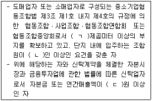
- 3천, 50, 50억
- 3천, 100, 100억
- 5천, 50, 50억
- 5천, 50, 100억
- 5천, 100, 100억
(정답률: 알수없음)
70. 유통산업발전법령상 지식경제부장관이 공동집배송센터의 지정을 취소할 수 있는 경우에 해당하지 않는 것은?
- 공동집배송센터의 지정을 받은 날부터 정당한 사유없이 3년 이내에 시공을 하지 아니하는 경우
- 지정요건 및 시설ㆍ운영기준에 미달하는 경우에 하는 시정명령을 이행하지 아니하는 경우
- 공동집배송센터사업자인 법인, 조합 등이 해산된 경우
- 공동집배송센터의 지정을 받은 날부터 3년이 되었으나 준공되지 아니한 경우
- 공동집배송센터의 시공후 공사가 1년 동안 중단된 경우
(정답률: 알수없음)
71. 유통산업발전법령상 분쟁조정에 관한 설명으로 옳지 않은 것은?
- 시ㆍ군ㆍ구의 유통분쟁조정위원회의 조정안에 불복이 있는 자는 조정안을 제시받은 날부터 15일 이내에 시ㆍ도의 유통분쟁조정위원회에 조정을 신청할 수 있다.
- 유통분쟁조정위원회는 유통분쟁조정이 부정한 목적으로 신청된 경우를 제외하고는 당해 조정을 거부할 수 없다.
- 유통분쟁조정위원회는 신청된 조정사건에 대한 처리절차의 진행 중에 일방 당사자가 소를 제기한 때에는 그 조정의 처리를 중지하고 이를 당사자에게 통보하여야 한다.
- 유통분쟁조정위원회는 동일한 시기에 동일한 사안에 대하여 다수의 분쟁조정이 신청된 경우에는 그 다수의 분쟁조정신청을 통합하여 조정할 수 있다.
- 유통분쟁의 조정을 위한 연구용역이 필요한 경우로서 당사자가 그 용역의뢰에 합의한 경우 그에 소요되는 비용은 특정한 약정이 없는 한 당사자가 같은 비율로 부담한다.
(정답률: 알수없음)
72. 유통산업발전법령상 시장ㆍ군수ㆍ구청장이 하는 대규모점포등의 개설등록의 취소사유로서 ( )에 들어갈 내용으로 올바르게 나열된 것은?
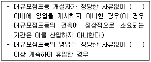
- 6개월, 1년
- 1년, 6개월
- 1년, 1년
- 2년, 6개월
- 2년, 1년
(정답률: 알수없음)
73. 유통산업발전법령상 유통산업발전기본계획 및 시행계획에 관한 설명으로 옳은 것은?
- 지식경제부장관은 유통산업의 발전을 위하여 10년 마다 유통산업발전기본계획을 관계중앙행정기관의 장과의 협의를 거쳐 세우고 이를 시행하여야 한다.
- 유통산업발전기본계획에 따라 5년 마다 유통산업발전시행계획을 관계중앙행정기관의 장과의 협의를 거쳐 세워야 한다.
- 지식경제부장관은 관계중앙행정기관의 장에게 유통산업발전기본계획의 수립을 위하여 필요한 자료를 해당 기본계획 개시연도의 전년도 9월 말일까지 제출하여 줄 것을 요청할 수 있다.
- 지식경제부장관은 관계중앙행정기관의 장에게 유통산업발전시행계획의 수립을 위하여 필요한 자료를 매년 2월 말일까지 제출하여 줄 것을 요청할 수 있다.
- 관계중앙행정기관의 장은 유통산업발전시행계획의 집행실적을 다음 연도 2월 말일까지 지식경제부장관에게 제출하여야 한다.
(정답률: 알수없음)
74. 유통산업발전법령상 전통상업보존구역의 지정과 임시시장 개설 등에 관한 설명으로 옳지 않은 것은?
- 시장ㆍ군수ㆍ구청장은 지역 유통산업의 전통과 역사를 보존하기 위하여 전통시장이나 전 통상업보존구역을 지정할 수 있다.
- 전통상업보존구역으로 지정할 수 있는 지역은 시장ㆍ군수ㆍ구청장이 정하는 전통상점가의 경계로부터 1킬로미터 이내의 범위이다.
- 전통상업보존구역의 범위, 지정 절차 및 지정 취소 등에 관하여 필요한 사항은 해당 지방자치단체의 조례로 정한다.
- 임시시장의 개설방법ㆍ시설기준 그 밖에 임시 시장의 운영ㆍ관리에 관한 사항은 시ㆍ군ㆍ구의 조례로 정한다.
- 지방자치단체의 장은 임시시장의 활성화를 위하여 이를 체계적으로 육성ㆍ지원하여야 한다.
(정답률: 알수없음)
75. 유통산업발전법령상 유통정보화역무를 제공하는 자가 유통표준전자문서 또는 컴퓨터 등 정보처리조직의 파일에 기록된 유통정보를 공개할 수 있는 경우가 아닌 것은? (단, 국가의 안전보장에 위해가 없고 타인의 비밀을 침해할 우려가 없는 정보에 한함)
- 관계행정기관의 장이 행정목적상 필요에 의하여 신청하는 정보
- 시장ㆍ군수ㆍ구청장이 행정목적상 필요에 의하여 신청하는 정보
- 특별자치도지사가 행정목적상 필요에 의하여 신청하는 정보
- 수사기관이 수사목적상 필요에 의하여 신청하는 정보
- 법원이 제출을 명하는 정보
(정답률: 알수없음)
76. 철도사업법령상 철도사업의 면허 등에 관한 설명으로 옳지 않은 것은?
- 철도사업을 경영하려는 자는 국토해양부장관의 면허를 받아야 한다.
- 면허를 받기 위해서는 사업계획서를 첨부한 면허신청서를 국토해양부장관에게 제출하여야 한다.
- 법인이 아닌 자도 철도사업의 면허를 받을 수 있다.
- 철도사업법 또는 철도관계법령을 위반하여 금고 이상의 실형을 선고받고 그 집행이 종료된 날부터 2년이 경과되지 아니한 자는 철도사업면허를 받을 수 없다.
- 철도사업법에 따라 철도사업의 면허가 취소된 후 그 취소일부터 2년이 경과되지 아니한 자는 철도사업 면허를 받을 수 없다.
(정답률: 알수없음)
77. 철도사업법령상 부가운임의 징수에 관한 설명이다. 다음 ( )에 들어갈 내용으로 올바르게 나열된 것은?
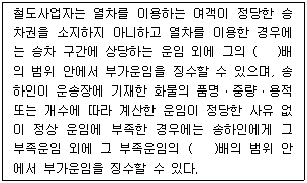
- 20, 5
- 30, 5
- 30, 15
- 50, 15
- 50, 20
(정답률: 알수없음)
78. 철도사업법령상 철도사업자가 국토해양부장관의 인가를 받아야 하는 사업계획의 변경사항에 해당하지 않는 것은?
- 철도이용수요가 적어 수지균형의 확보가 극히 곤란한 벽지 노선의 철도운송서비스의 종류를 변경하거나 다른 종류의 철도운송서비스를 추가하는 경우
- 여객열차의 운행구간을 변경하는 경우
- 사업용철도노선별로 여객열차의 정차역을 신설 또는 폐지하거나 10분의 2 이상 변경하는 경우
- 사업용철도노선별로 여객열차의 10분의 1 이상의 운행횟수를 변경하는 경우
- 공휴일ㆍ방학기간 그 밖의 수송수요와 열차운행계획상의 수송력과 현저한 차이가 있는 경우로서 3월 이내의 기간동안 운행횟수를 변경하는 경우
(정답률: 알수없음)
79. 농수산물유통 및 가격안정에 관한 법령상 농수산물 유통기구의 정비 등에 관한 설명으로 옳지 않은 것은?
- 농림수산식품부장관은 농수산물의 원활한 수급과 유통질서를 확립하기 위하여 필요한 경우 농수산물유통기구정비기본방침을 수립하여 고시할 수 있다.
- 시ㆍ도지사는 기본방침이 고시된 때에는 기본 방침에 따라 지역별 정비계획을 수립하고 농림수산식품부장관의 승인을 얻어 이를 시행하여야 한다.
- 농림수산식품부장관은 농수산물의 공정거래질서의 확립을 위하여 필요한 경우에는 유사도매시장구역을 지정할 수 있다.
- 도매시장ㆍ공판장 및 민영도매시장의 통합ㆍ이전 또는 폐쇄를 명할 경우 미리 관계인에게 최근 2년간의 거래실적과 거래추세 등 필요한 사항에 대한 소명기회를 주어야 한다.
- 도매시장ㆍ공판장 및 민영도매시장의 통합ㆍ이전 또는 폐쇄로 인하여 도매시장 등의 개설자 또는 도매시장법인이 입게 될 손실에 대해서 미리 관계인과 협의를 거친 후 정당한 보상을 하여야 한다.
(정답률: 알수없음)
80. 농수산물유통 및 가격안정에 관한 법령상 농수산물 도매시장의 개설 등에 관한 설명으로 옳지 않은 것은?
- 중앙도매시장의 경우는 특별시ㆍ광역시 또는 특별자치도가 개설하고 지방도매시장의 경우는 특별시ㆍ광역시ㆍ특별자치도 또는 시가 개설한다.
- 특별시ㆍ광역시ㆍ특별자치도 또는 시가 도매시장을 개설하려는 경우에는 미리 농림수산식품부장관의 허가를 받아야 한다.
- 중앙도매시장에는 부류마다 도매시장개설자가 부류별로 지정한 도매시장법인을 두어야 한다.
- 도매시장의 명칭에는 그 도매시장을 개설한 지방자치단체의 명칭이 포함되어야 한다.
- 중앙도매시장을 폐쇄하고자 하는 때에는 그 3월 전에 개설허가권자의 허가를 받아야 한다.
(정답률: 알수없음)
시스템화의 원칙은 제품을 생산하는 과정에서 필요한 모든 요소들을 하나의 시스템으로 통합하여 효율적인 생산을 가능하게 하는 것을 말한다. 이를 위해서는 제품의 규격, 구조, 품질 등이 표준화되어야 하며, 이를 통해 파렛트화 또는 컨테이너화를 효과적으로 실시할 수 있다. 따라서 "표준화의 원칙"이 시스템화의 원칙에 해당한다.